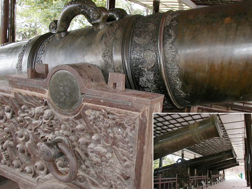

Viet Nam Trav-E-Logs©
| Hue
|
|
| back: My Son | Imperial Enclosure Gate in Hue, a World Heritage Site. Inserts show interesting arch details. |
=================================
May 28 - 31, 2003
Hue was the capital of Viet Nam during the succession of emperors from the early 19th century until the end of WWII. The ancient capital boasts a moated citadel. An inner citadel is called the Imperial Enclosure, which additionally surrounds the Forbidden Purple City, or emperor's residence. The city is still very much a cultural, religious, and educational center.
Rented a bike for the day and rode around and through the Citadel, including the Imperial Enclosure. The photo to the right shows some of the nine ceremonial cannons in the Imperial Enclosure. Also visited pagodas, temples and a mosque. Several monks were listening to a talk in one of the temples visited. In the afternoon I left the Citadel and rode up river to visit several important pagodas. While going down the steps of one of the pagodas, a colorful juvenile snake was making it's way down in front of me. Much later this was identified as a juvenile red-necked keelback - Rhabdophis subminiatus.
On Saturday, took a riverboat trip to Thien Mu Pagoda, and several emperor tombs up river. Found the Minh Mang Royal Tomb most impressive.
Enjoy!
Bill
------------------------------
"Travel is Fatal to Bigotry, Prejudice, and Narrow-minded ness" .... attributed to Mark Twain
| next: Ha Noi |
| back: My Son |